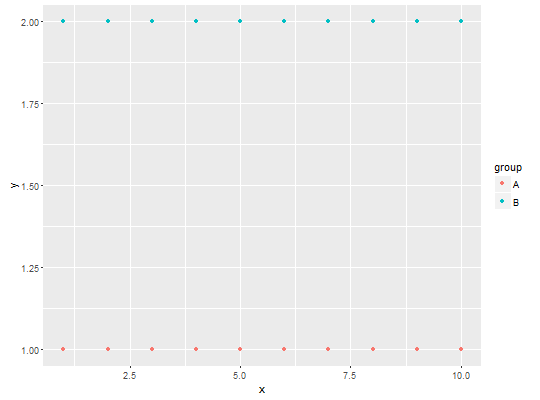
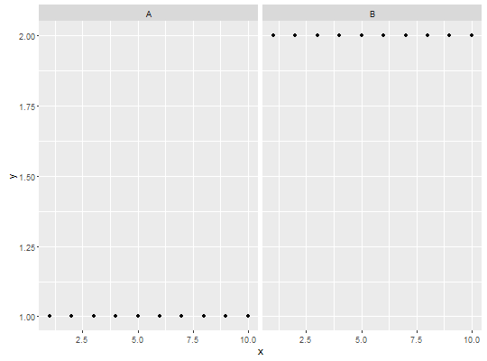

Print to console data received by the compute panel function.
Usage
stat_debug_panel(mapping = NULL, data = NULL, geom = "null", summary.fun = dplyr::as_data_frame, summary.fun.args = list(), position = "identity", na.rm = FALSE, show.legend = FALSE, inherit.aes = TRUE, ...)
Arguments
- mapping
- The aesthetic mapping, usually constructed with
aesoraes_string. Only needs to be set at the layer level if you are overriding the plot defaults. - data
- A layer specific dataset - only needed if you want to override the plot defaults.
- geom
- The geometric object to use display the data
- summary.fun
- A function used to print the
dataobject received as input. - summary.fun.args
- A list.
- position
- The position adjustment to use for overlapping points on this layer
- na.rm
- a logical value indicating whether NA values should be stripped before the computation proceeds.
- show.legend
- logical. Should this layer be included in the legends?
NA, the default, includes if any aesthetics are mapped.FALSEnever includes, andTRUEalways includes. - inherit.aes
- If
FALSE, overrides the default aesthetics, rather than combining with them. This is most useful for helper functions that define both data and aesthetics and shouldn't inherit behaviour from the default plot specification, e.g.borders. - ...
- other arguments passed on to
layer. This can include aesthetics whose values you want to set, not map. Seelayerfor more details.
Description
stat_debug reports all distinct values in group
and PANEL, and nrow, ncol and the names of the columns
or variables, and the class of x and y for each panel in a ggplot as passed to the
compute_panel function in the ggproto object.
Computed variables
- x
- x at centre of range
- y
- y at centre of range
- nrow
nrow()ofdataobject- ncol
ncol()ofdataobject- colnames
colnames()ofdataobject- colclasses
class()ofxandycolumns indataobject- group
- all distinct values in group as passed in
dataobject - PANEL
- all distinct values in PANEL as passed in
dataobject
Examples
library(ggplot2) my.df <- data.frame(x = rep(1:10, 2), y = rep(c(1,2), c(10,10)), group = rep(c("A","B"), c(10,10))) ggplot(my.df, aes(x,y)) + geom_point() + stat_debug_panel()
[1] "Input 'data' to 'compute_panel()':" # A tibble: 20 x 4 x y PANEL group <dbl> <dbl> <int> <int> 1 1 1 1 -1 2 2 1 1 -1 3 3 1 1 -1 4 4 1 1 -1 5 5 1 1 -1 6 6 1 1 -1 7 7 1 1 -1 8 8 1 1 -1 9 9 1 1 -1 10 10 1 1 -1 11 1 2 1 -1 12 2 2 1 -1 13 3 2 1 -1 14 4 2 1 -1 15 5 2 1 -1 16 6 2 1 -1 17 7 2 1 -1 18 8 2 1 -1 19 9 2 1 -1 20 10 2 1 -1ggplot(my.df, aes(x,y, colour = group)) + geom_point() + stat_debug_panel()
[1] "Input 'data' to 'compute_panel()':" # A tibble: 20 x 5 x y colour PANEL group <dbl> <dbl> <fctr> <int> <int> 1 1 1 A 1 1 2 2 1 A 1 1 3 3 1 A 1 1 4 4 1 A 1 1 5 5 1 A 1 1 6 6 1 A 1 1 7 7 1 A 1 1 8 8 1 A 1 1 9 9 1 A 1 1 10 10 1 A 1 1 11 1 2 B 1 2 12 2 2 B 1 2 13 3 2 B 1 2 14 4 2 B 1 2 15 5 2 B 1 2 16 6 2 B 1 2 17 7 2 B 1 2 18 8 2 B 1 2 19 9 2 B 1 2 20 10 2 B 1 2ggplot(my.df, aes(x,y)) + geom_point() + facet_wrap(~group) + stat_debug_panel()
[1] "Input 'data' to 'compute_panel()':" # A tibble: 10 x 4 x y PANEL group <dbl> <dbl> <fctr> <int> 1 1 1 1 -1 2 2 1 1 -1 3 3 1 1 -1 4 4 1 1 -1 5 5 1 1 -1 6 6 1 1 -1 7 7 1 1 -1 8 8 1 1 -1 9 9 1 1 -1 10 10 1 1 -1 [1] "Input 'data' to 'compute_panel()':" # A tibble: 10 x 4 x y PANEL group <dbl> <dbl> <fctr> <int> 1 1 2 2 -1 2 2 2 2 -1 3 3 2 2 -1 4 4 2 2 -1 5 5 2 2 -1 6 6 2 2 -1 7 7 2 2 -1 8 8 2 2 -1 9 9 2 2 -1 10 10 2 2 -1

See also
Other diagnosis.functions:stat_debug_group